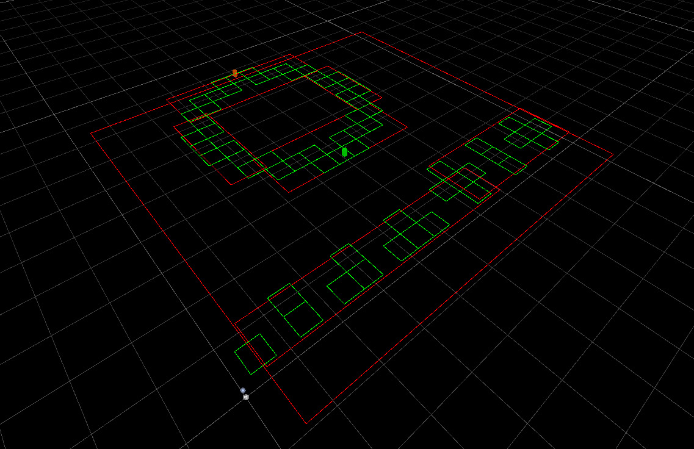

I have been developing games and demos in third-party engines on and off since the start of high school. While I most enjoy working in teams as a programmer and have the most experience doing gameplay and graphics programming in engines, due to a mix of passion and necessity I have done plenty of solo work where I filled all game development roles. Unity is my go-to third party engine for any real-time game or demo that I need completed quickly, but I have also worked with UE4 and Godot for game jams and personal projects in the past. My most recent in-engine gamedev job was developing an educational game for researchers in the College of Design. Before that, I did volunteer work developing a canoe carving simulation with the Interactive Visualization Lab. To introduce myself to that lab, I also made a 3D painting program which employed Unity's compute shader API for screenspace effects in the GUI and worldspace effects on painted canvases. My last purely personal Unity project was Catalogue, a 2D exploration game with shoot-em-up combat. Catalogue's art is entirely drawn by hand in ink on paper, and it is animated programatically according to geometric principles. Catalogue was a fantastic exercise in writing a framework for GUI that is simultaneously diegetic and non-diegetic, where elements are standard game objects positioned and oriented according to both worldspace and screenspace information. After Catalogue, I worked on a 3D first-person shooter to learn about writing my own navmesh generation, since I had only ever done A* pathfinding on pre-existing graphs. I made decent progress on generating Delaunay triangulations and R-Tree spatial hierarchies from walkable geometry, but the game stayed as little more than a demo. One of my favourite parts of working in-engine is access to a wide array of shader programming functionality. In the screenshots below, one sees shaders that take advantage of distance fields, dithering algorithms, communication in the stencil buffer, and even compute shaders implementing the Kuwahara and Gaussian blur filters in texture space respectively.